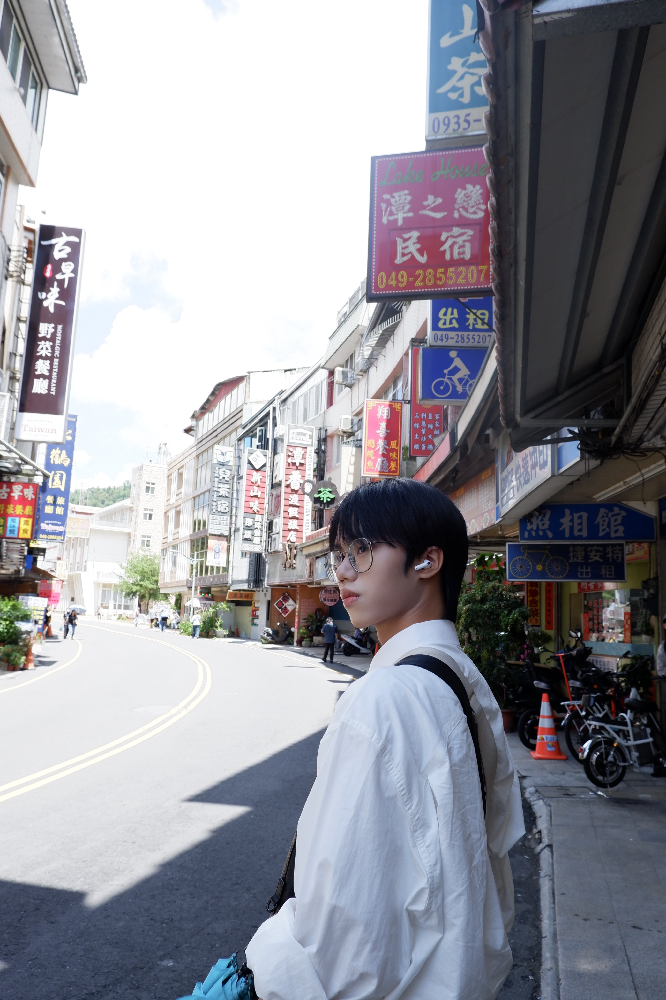

Trần Quốc Hoàng (Hoang Quoc Tran)
Email: hoangquoctran04@gmail.com
I am a senior undergraduate student majoring in Korean Studies (Advanced Program) at the Department of Korean Language, Hanoi University (HANU), and a former exchange student in Korean Language and Literature at Kookmin University, Seoul.
My academic interests lie at the intersection of Korean Linguistics, Korean–Vietnamese Translation Studies, AI & Machine Translation Evaluation, and Second Language Acquisition.

Education
2022–2027 (Expected): B.A. in Korean Studies (Advanced Program), Hanoi University (Cumulative GPA: 3.85/4.00)
2025: Exchange Student in Korean Language and Literature, Kookmin University, Seoul, South Korea (GPA: 4.39/4.50; 98.7/100)
2019–2022: High School Diploma, Son Tay High School for the Gifted, Hanoi, Vietnam
Publication
Trần, Quốc Hoàng. (2026). Case study on Characteristics of Korean-Vietnamese literary title translation by selected Artificial Intelligence tools: An approach based on Nord’s title function framework. In Korea Journal, Korea Research Association of Vietnam (KRAV).
Conference
Phạm, Thị Ngọc, Nguyễn, Thanh Vân, & Trần, Quốc Hoàng. (2026). The ability of selected AI tools to handle Vietnamese–Korean untranslatability: An analysis of conversational data from the film Face Off 6. International Academic Conference, Hanoi University of Industry.
Presentation
Trần, Quốc Hoàng. (2026). A study of AI tools for supporting Korean translation. 2026 University-Level Academic Conference, Hanoi University. (Rated Good)
Trần, Quốc Hoàng. (2024). A study on Negative Transfer of using Vietnamese tones in the pronunciation of Korean by Vietnamese learners. Annual Academic Conference for Undergraduate Students, Dep. of Korean Language, Hanoi University.
Trần, Quốc Hoàng, Trần, Ngọc Minh, & Dương, Minh Khuê. (2024). A study on the EPR model in South Korea and lessons for Vietnamese enterprises. Annual Academic Conference for Undergraduate Students, Dep. of Korean Language, Hanoi University.
Trần, Quốc Hoàng. (2023). A study on the effects of “Impression Exposure” of Korean Chinese letters on Korean vocabulary retention among Vietnamese learners. Annual Academic Conference for Undergraduate Students, Dep. of Korean Language, Hanoi University.
Experience & Activities
Mar 2026–now: Reporter, Editorial Department, Korean Association in Hanoi (하노이한인회) — Covering Vietnamese local news and authoring Korean-language articles for the Korean expatriate community.
Part-time Interpreter, Consular Section, Embassy of the Republic of Korea in Vietnam
Freelance Korean Language Instructor — Designing syllabi and teaching beginner-level Korean courses.
2024–2025: CEO & Founder, Korean Language Learning EdTech Startup Project — Reached Top 5 at the Social Innovation Launch Startup Competition.
2025: Fellow, Daesang ETFF, Bali, Indonesia — Film production and cross-cultural media communication.
Content Creator & Supporter, WeKO (KOICA Korea) — Producing digital content on Korea’s Official Development Assistance (ODA).
2024: Supporter at KOCCA Vietnam & Member at Vietnam–Korea Cultural Exchange Center.
2022–2023: Content Curator at TEDxHANU (co-organized two TEDx conferences) & External Relations Member at DEL HANU.
Honors, Awards & Certifications
Language Proficiency: TOPIK Level 6; IELTS 7.0 Overall; HSK Level 4 (Expected early 2027).
2025: First Prize, Essay Contest on Study Abroad Life in Korea (한국 유학 생활 수기 공모전).
2025: Top 5 Finalist, Social Innovation Launch Startup Competition.
Recipient of the Korea Foundation – Samsung Scholarship and the Bong & Sul Scholarship (Baemin Korea).
2022–2026: Academic Encouragement Scholarship, Hanoi University (awarded for 6/6 consecutive semesters).
2024: First Prize, Korean Speaking Contest, Foreign Trade University (FTU).
2024: First Prize, Korean Literature Dramatization Contest.
2023: Bronze Medal, Saigon Model United Nations (S.MUN).
2023: Third Prize, Korean Language Enthusiasts Contest, Hanoi University of Industry.